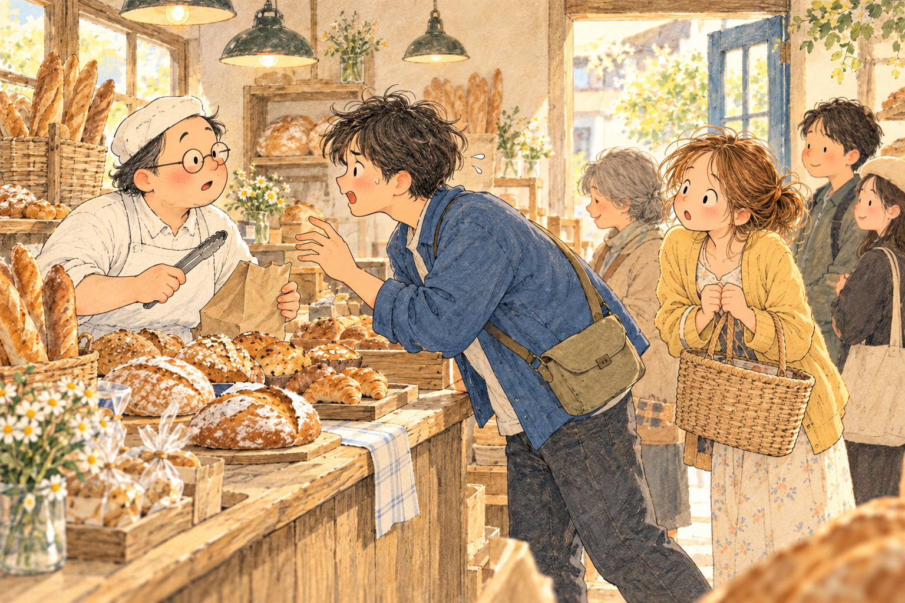

🧭 마음 탐정 연습실
마음을 알아가는 작은 시작, 마음 열쇠를 만나봐요.
그림에서 어떤 모습이 보이나요?

귀 열쇠에서는 이야기 속 말을 읽어요. 실제 녹음 소리는 나오지 않아요.
찾은 모습과 내 생각은 달라요
“이마에 땀이 있어요”는 눈으로 본 모습이에요.
“급하게 왔을지도 몰라요”는 내가 짐작한 마음이에요.
표정 하나만으로 마음을 꼭 정하지 않아요. 아직 모르는 마음은 남겨 두고, 서로의 말을 들어보아요.
📖 마음 동화책 읽으러 가기